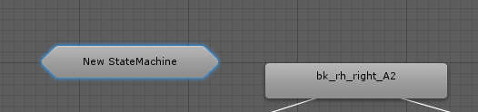

In our previous exercise, we added 5 new Attack Animators, each with two Conditions: Attack Trigger Parameter, and the AttackIndex Integer Parameter.
As you can see, the Animator Window is getting a bit cluttered. To Clean it up a bit, we can create a Sub-State Machine to group them together. A Sub-State machine does not change any of the Transitions or States,but rather just cleans up the UI.
In the Animator window, right click on the empty background, and choose Create Sub-State Machine.
A "New StateMachine" state appears:

However, it's a different shape; it's a hexagon, rather than box. That's an indicator that it's a Sub-State machine, and may contain more states. Click on it once to open up it's Inspector window, and change the name. We'll call it the AttackGroup.
Multi-select your Attack States, and drag them over the AttackGroup. You'll notice your mouse cursor will have a little + added to it when it's over the Sub-State machine.
The Attack Sates will disappear, the links from Any State have disappeared, and a new Transition line, with three arrows, point from the AttackGroup Sub-State Machine, to Idle_A.
The Transition line with 3 arrows indicates that there's multiple Transition states coming out of the AttackGroup. Click on the Transition line to bring up the Inspector Window.
Under the Transitions, we see there's multiple transitions now. It shows which State goes to which State. All our links are still intact to the Idle_A, along with any of the conditions we have set on them. Our link from the Any State has disappeared as well. However, a Sub-State Machine itself has an Any State, so there's no need to visualize the link here.
Double click on the AttackGroup to access the States within it. Initially, it'll be a bit of a mess. However, you can re-arrange the states to make them easier to see and read.
The Sub-State Machine has an Entry, Any State, and an Exit, like the top level State Machine. However, it has a new State: ( Up) Base Layer. This is the link outside of the Sub-State Machine, and it's what connects our AttackGroup to our Idle_A.
If you need to add a new Attack Animation to the sub-state, and need to Transition back to the main Idle_A, drag your Transition to the (Up) Base Layer. A small pop up will show you the available States to connect too.
Likewise, if you need to make a transition from the main State Machine, into a Sub-State machine, make a Transition to the AttackGroup state machine, and a similar pop up appears.
Created with the Personal Edition of HelpNDoc: Create iPhone web-based documentation